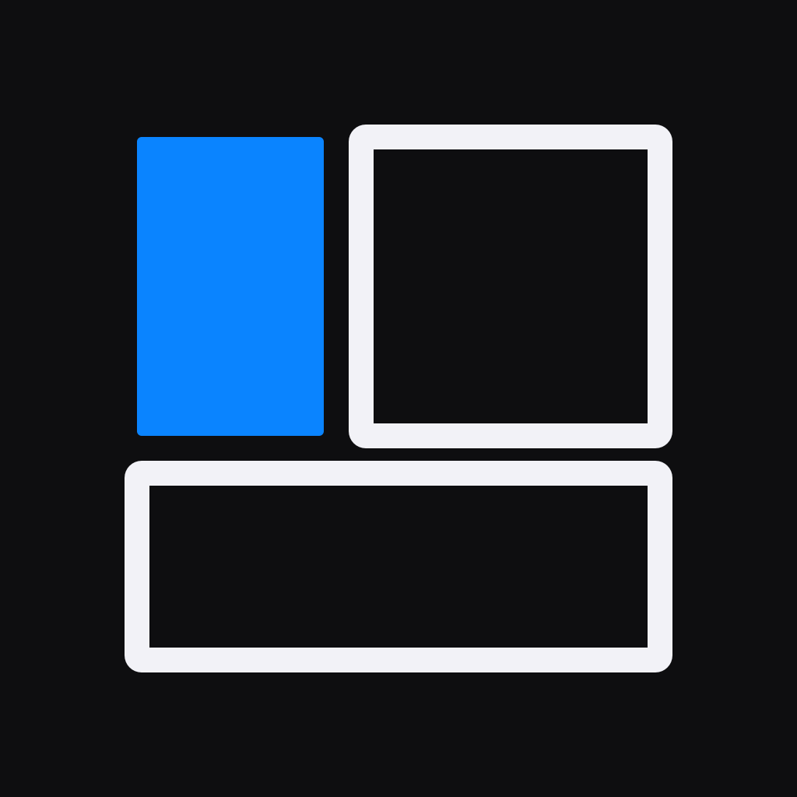
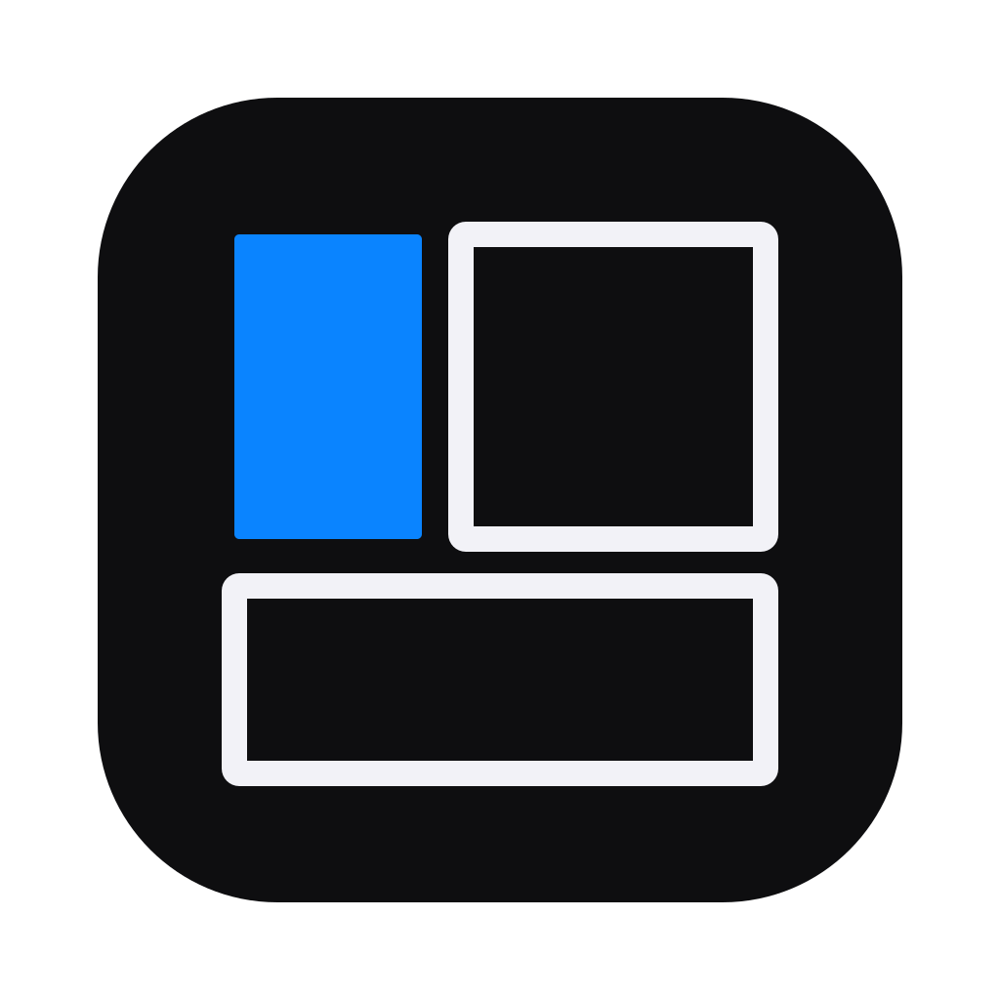
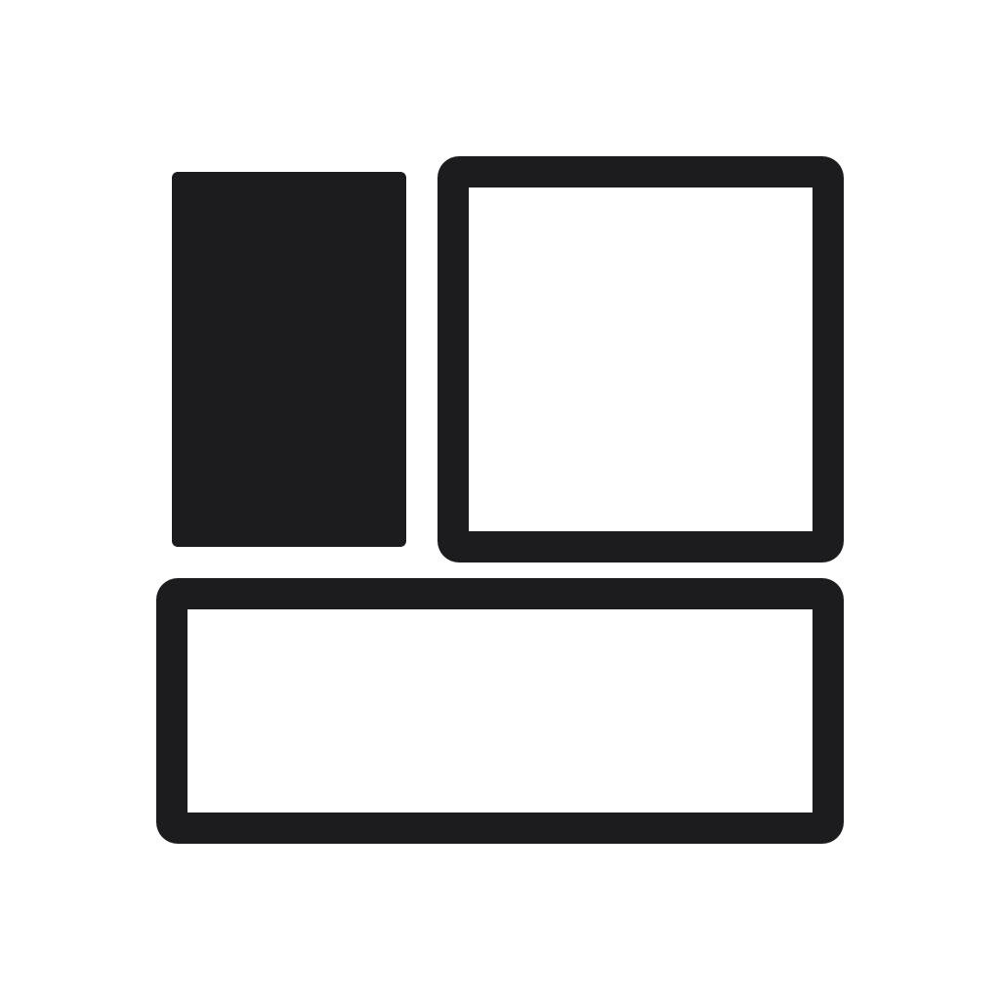

Livrable 6 sur 6, Yum
Icone d application
Une case de manga vide, cadre et gouttiere seuls. Trois cases de tailles inegales, dont une seule est remplie en accent. Aucune lettre, aucun visage, aucun objet, aucune reprise d une marque existante.

iOS et iPadOS
Pleine surface, le systeme applique son masque. Fichier livre en 1024 par 1024.

macOS
Squircle dessine, marge interieure de 100, rayon 184. Le contenu se resserre pour tenir la marge du dock.
Geometrie, toile de 1024
La case pleine est la seule masse coloree. C est le meme geste que la pastille de non lus : l accent bleu marque une chose, une seule, et jamais pour decorer.
Declinaison claire
Fond `#F5F5F7`, cadres en `#1C1C1E`, accent inchange. Utilisee dans le reglage Icone de l application.
Monochrome

barre de menus, 22
Fond transparent, une seule couleur. La case pleine et les cadres partagent la teinte, la lecture repose sur l opposition masse contre contour.